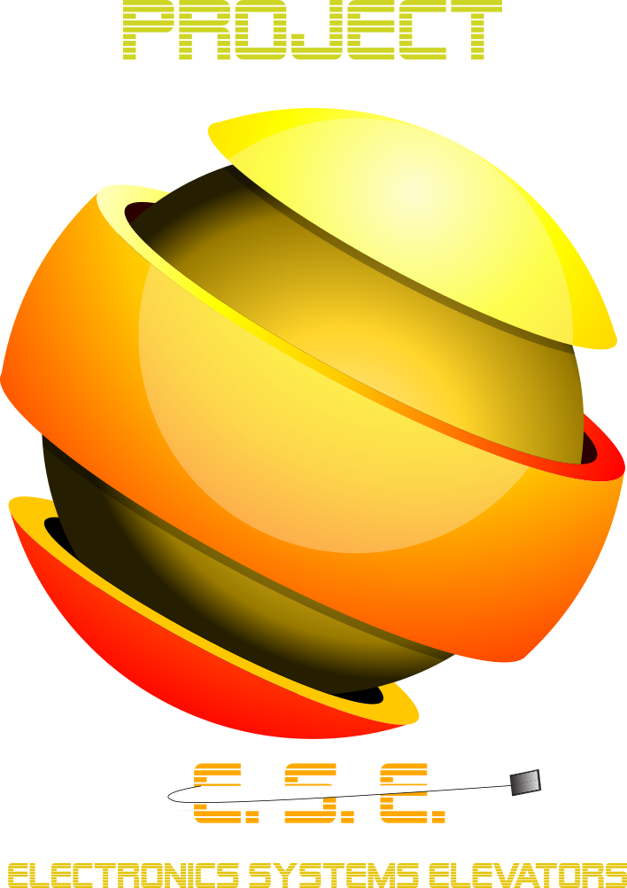

Ramtin's Log Book
Week 1
Wednesday 20th 2020 - 8:15 AM
- Lay the ground for our group.Here is a list to be completed until monday
- The project plan
- Website for project and for logging for logbooks
- Programming the STM32 board that will act as nodes for floors and will control the CAN bus
- Commenced with writing the project plan using the template given by Michael
- Personal: Download Git, ezviz, pulse secure, Putty/Tera Term, VS code and XAMPP
- Tasks have been mediated between the 4 of us on the project plan (see link in the project
homepage)
- Eduard and Nishant don't have their Nucleo so the STM 32 tasks will be up to me and Weipeng
Friday 22 2020 - 12:40 AM
- Nishant and Eduard agree to work on the web development of the project
- Weipeng and I will focus on programming the STM32 as per the last datacomm lecture
- Website for project and for logging for logbooks
- Find my nucleo board for working on the STM 32 for debrief on monday
- Once the website is uploaded by Nishant and Weipeng, get my logbook updated on it
Saturday 23 2020 - 11:27 PM
- Caught up on Ali's Math class and started Assignment 1
- Caught up on Michael's Software course
- Spoke to weipeng about programming the STM 32 board. He has set up most of it already
Sunday 24 2020 - 8:50 PM
- Caught up on all of Michael's classes
- Updated the logbook section for myself
- Started working on the STM 32 for debrief
Week 2
Monday 25 2020 - 3:20 PM
- Did meeting with group
- Worked on the meeting minutes
- I planned to do the GUI button design and the Logo on inkscape and GIMP
- I will also continue working on the STM 32 with Weipeng. My task is to try to help Weipeng mainly. But understanding filters is my goal.
- I have to learn more about Git and github to prevent pushing to master and messing everything up
- Nishant and Eduard will work on CSS
- For the rest of the day, I study Math for Wednesday's quiz
Tuesday May 26 2020 - 5:15 PM
- Finished math and continued to rewatch recorded lectures of Math to catch up
- Doing Assign 1 and 2 for Math in preparation for the quiz
- Nothing for the rest of the day
Wednesday May 27 2020 - 9:47 AM
- Class until 1 pm with Michael
- Will revise Math until 3 PM
- Will have math from 3 to 5 pm
- Plan to call meeting with either Weipeng or entire team to clarify my purpose for this week. If nothing, I will continue working on catching up
Thursday May 28th - 10:15 PM
- Just caught up with Software and Datacomm lectures. I am having difficulty understanding CAN BUS and forms in software so I also resorted to watching youtube videos about them
Friday May 29th - 9:15 PM
- Started work on the logo
- Started rewatching lecture 3 and 4 of Math to do the assignment
- Watching videos on doing Git and Github correctly
Saturday May 30th - 11:12 PM
- Spent most of the day catching up on Datacomm and attempting the assignment by myself in prep for the quiz. The rest of the group has already done those parts and submitted.
- Tried to finish the logo on inkscape
Monday June 1 2020 - 11:12 PM
- Final result of the logo. I will present it to both the group and the instructors on debrief time today. If the group hates it, then I will change it....to a picture of myself only. Muahahaha!
- 
- All the images are done by me, except the elevator icon - it comes from a royalty free website
Week 3
Wednesday June 3 - 9:43 PM
- Revised for the Datacomm and Math Quiz
- Documented what needs to be done (from my end) for the project debrief next week
- Datacomm quiz and Math Quiz
Friday June 5 - 7:20 PM
- Started working on learning Bootstrap from recorded lectures
- Thermo Quiz
- Started learning PHP from Codecademy pro
Saturday June 6 - 5 PM
- Caught up on lectures in Datacomm and Software
- Watched videos on how to do Bootstrap
- Helped parents with gardening and pool cleaning
Monday June 8 - 1 PM
- Updated Status Report
- Created Video to overview our project
- Embedded the video into website - about page
- Updated logbook on website
Click here to go back to the main page
Copyright © 2020 Eduard Nishant Ramtin Weipeng